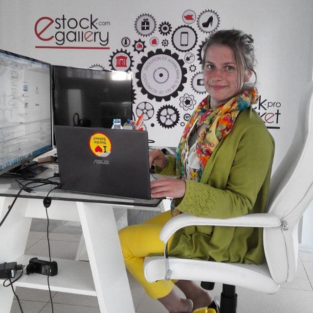
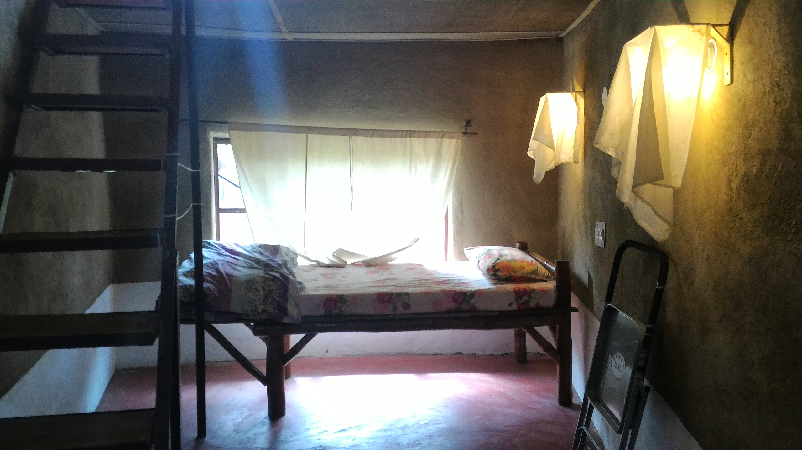
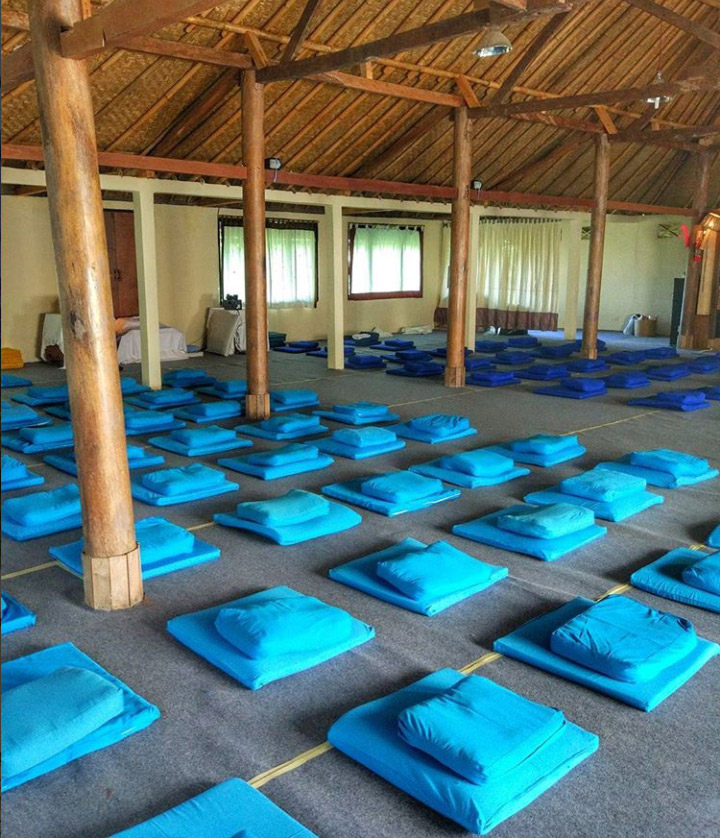
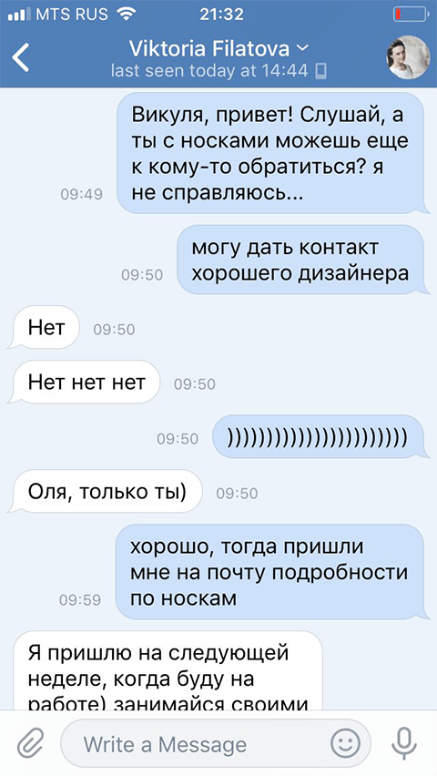
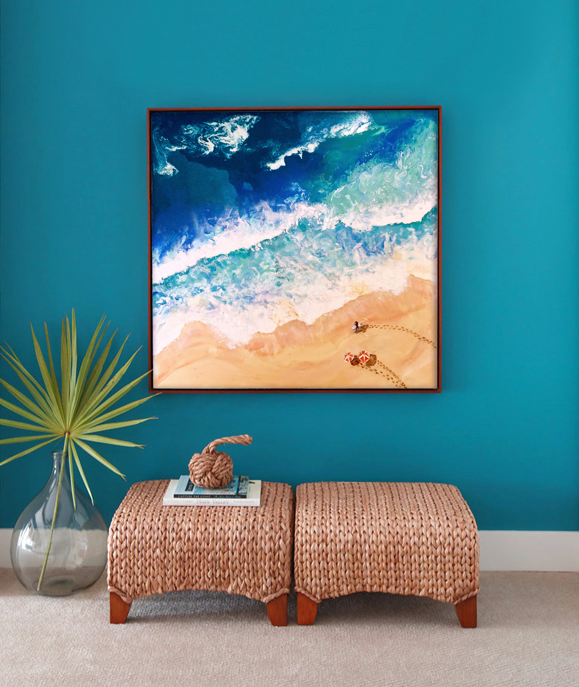
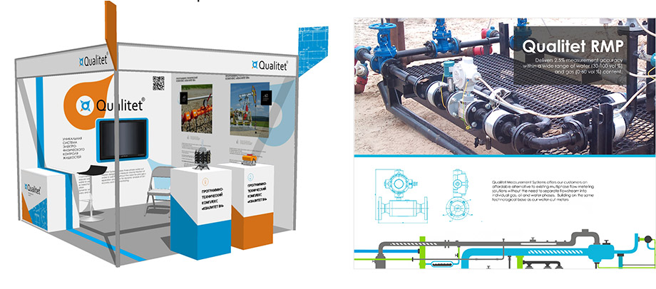
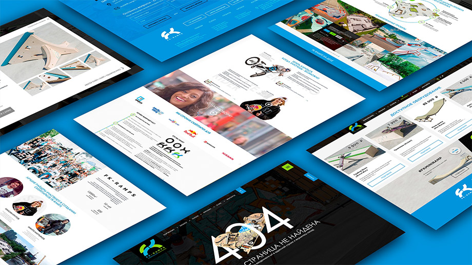
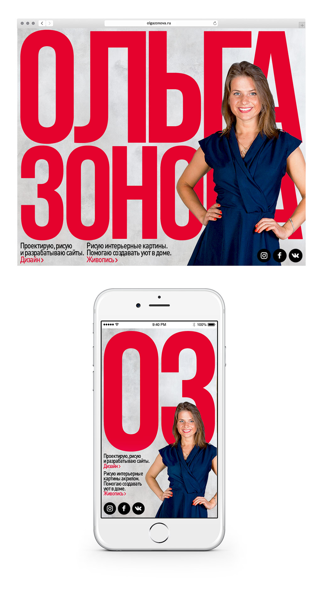

<!doctype html>
<html lang="ru">

<head>
    <meta charset="utf-8" />
    <meta http-equiv="x-ua-compatible" content="ie=edge" />
    <title>Околобюро</title>
    <meta name="description" content="" />
    <meta name="viewport" content="width=device-width, initial-scale=1" />

    <link rel="apple-touch-icon" sizes="180x180" href="img/favs/apple-touch-icon.png">
    <link rel="icon" type="image/png" sizes="32x32" href="img/favs/favicon-32x32.png">
    <link rel="icon" type="image/png" sizes="16x16" href="img/favs/favicon-16x16.png">
    <link rel="manifest" href="img/favs/site.webmanifest">
    <link rel="mask-icon" href="img/favs/safari-pinned-tab.svg" color="#5bbad5">
    <link rel="shortcut icon" href="favicon.ico">
    <meta name="msapplication-TileColor" content="#603cba">
    <meta name="msapplication-config" content="img/favs/browserconfig.xml">
    <meta name="theme-color" content="#000000">
    <!-- Place favicon.ico in the root directory -->

    <link rel="stylesheet" href="css/normalize.css" />
    <link rel="stylesheet" href="css/main.css" />
    <link rel="stylesheet" href="css/article.css" />
</head>

<body>
    <div class="container">
        <div class="article">
            <aside class="interviewer">
                <p>Беседовал
                    <a href="">Сема&nbsp;Семочкин</a>
                </p>
            </aside>
            <h2>Увидел на твоём сайте, что ты много путешествуешь. Расскажи</h2>
            <p>Я уже четвёртую зиму не живу в России.</p>
            <p>Первый раз была в Испании. Работала в компании по продаже недвижимости. Занималась оформлением офиса, снимала
                виртуальные туры в продаваемых квартирах, сделала 2 сайта для разных направлений деятельности. К сожалению,
                инвесторы не потянули по вложениям и объем работ резко сократился. Я вернулась в Россию.</p>
            <aside>
                <p>
                    <a href="">eStock Gallery</a>
                    <br />
                    <a href="">eStock Invest</a>
                    <br /> Проекты, над которыми работала в Испании</p>
            </aside>
            <figure>
                
                <figcaption>В Испании было самое крутое рабочее место с двумя мониторами</figcaption>
            </figure>
            <p>Следующую зиму решила поехать на Бали. В голове была картинка, что крутые дизайнеры, программисты могут туда
                приехать, жить где угодно, снять виллу. На самом деле, было тяжело параллельно работать и заниматься сёрфингом.
                Там нужно быть очень организованным, чтобы продуктивно работать и развиваться. О чём пишет Горбунов: дизайнеры
                и фрилансеры деградируют, если уезжают куда-то на острова.</p>
            <p>
                <a href="">Почему «Таиланд» попал в список запрещённых слов</a>
            </p>
            <p>На Бали я познакомилась с девочкой, которая рассказала мне про курс йоги. В итоге путешествие завершилось поездкой
                в Индию. Там жила в ашраме в Гималаях, занималась йогой каждый день. Это сгладило впечатление от поездки
                в Азию, потому что в Индии был настоящий духовный подъём.</p>
            <aside>
                <p>Ашрам — учебный центр медитации и йоги</p>
            </aside>
            <figure class="full">
                
                <figcaption>Комната в ашраме. Все аскетично и практично</figcaption>
            </figure>
            <p>Я вернулась в Россию с намерением хорошо поработать. Устроилась параллельно в две компании и работала по полдня.
                За полгода я безумно устала. У меня стояла некая финансовая планка, и я её достигла. При этом удовлетворения
                я не получила.</p>

            <p>Решила, что снова хочу отдохнуть. Закрыла все проекты и поехала во Вьетнам. Там в это время жили друзья с Бали.
                Они мне рассказали, как прошли практику Випассаны. Это десятидневный курс практически круглосуточной медитации.
                Я решила, что сейчас самое время пройти его. Так я снова попала на Бали.</p>
            <aside>
                <p>
                    <a href="">Рассказала о своем опыте прохождения випассаны в Инстаграме</a>
                </p>
            </aside>
            <p>Я желаю каждому пройти такой курс. Медитация учит концентрации, без которой невозможно стать хозяином своей жизни.</p>
            <figure>
                
                <figcaption>Зал для медитаций в ашраме на о.Бали</figcaption>
            </figure>
            <h2>Что ты делаешь в Мексике?</h2>
            <p>Мой молодой человек получил контракт от «Данона» в США. Мы думали, что и я легко получу визу, потому что уже
                была в штатах в 2010 году. Но мне отказали трижды. Тогда мы решили, что я поеду в Мексику, а он будет навещать
                меня.
            </p>
            <h2>В Мексике живёшь одна?</h2>
            <p>Да.</p>
            <h2>Какое расстояние между вами?</h2>
            <p>На самолёте лететь 4 часа — он в Денвере работает.</p>
            <h2>Как ты узнала про Школу?</h2>
            <p>Про бюро Горбунова я узнала, когда в первый раз была на Бали. Я встретила парня, который учился в самый первый
                набор. На тот момент я уже пять лет занималась дизайном, но крутилась на одном месте и периодически чувствовала
                апатию. Немного повышала цены, вроде было ощущение роста, но чисто по финансовой отдаче. Меня никто не контролировал.
                Все мои заказчики принимали дизайн, но никто не говорил, что хорошо, что плохо.</p>
            <p>Этого парня звали Игорь Рудяк. Он работал удаленно в крупной компании и хорошо зарабатывал. Стала ему показывать
                свои работы. Он говорит: «Слушай, у тебя всё неплохо с макетами, проблема скорее в твоем внутреннем настрое.
                После школы Горбунова я иначе взглянул на работу дизайнера и побывал в кругу реально активных крутых ребят,
                жаждущих знаний». С того момента я начала читать Советы.</p>
            <h2>Какого это учиться в Школе, находясь на другом полушарии?</h2>
            <p>На самом деле норм, потому что я работала, пока все спят и ни на что не отвлекалась. Новое задание я получала
                в 16:00 в воскресенье и могла весь вечер им заниматься. Так я показала Нозику первую итерацию страницы о
                себе в 6 утра по Москве. Думаю, он удивился. Это задало ритм на второй ступени с самого начала.</p>
            <p>Разница во времени играла на руку и при общении с Артемом. Он отвечал за три минуты, если я писала в два часа
                ночи. А у меня было шесть вечера. Так я умудрилась даже на первой ступени получить от него комментариии по
                курсовой.
            </p>
            <h2>Как удавалось совмещать путешествия с работой? Как находила клиентов?</h2>
            <p>Клиенты приходили по сарафанному радио. Всегда был большой поток заказов. Я объясняю это своим ответственным
                подходом к работе. Я стараюсь не задерживать сроков — если задерживаю, то всегда согласовываю с клиентом.
                Есть заказчики, с которыми я работаю уже 4 года. Как учат в бюро, я стараюсь помочь клиентам и сделать всё,
                что в моих силах. Такое человеческое отношение к людям и помогало в работе.</p>
            <aside>
                
                <p>С Викторией работаю уже четыре года</p>
            </aside>
            <p>Как организовать работу в поездках. Во-первых, я занимаюсь дизайном с самого института. Почти всегда я работала
                удалённо: за 6–7 лет я проработала в офисе около года. Если что-то надо сделать, я не буду откладывать это
                на потом. Мне не сложно организовать себя в любом месте: в кафе, в автобусе, где угодно.</p>
            <p>Я всё детство профессионально занималась плаванием. Жила в тяжёлом режиме: выезжалана тренировку в 5:30 утра,
                потом ехала в школу, после школы опять возвращалась на тренировку. Я приучила себя работать в дороге: делала
                уроки в автобусе или машине. Так и с дизайном: я могу работать где угодно.</p>
            <blockquote>
                <p>Я работала, даже когда жила в ашраме в Гималаях</p>
            </blockquote>
            <h2>Как планируешь работу?</h2>
            <p>Работать над планированием я начала в Школе. Мне помогала система «Помодоро». Казалось, что я работала быстро
                и продуктивно, но почему-то всегда не хватало времени. Последние годы я жила с чувством, что время утекает
                сквозь пальцы, а я постоянно за ним гонюсь.</p>
            <p>И тут мой молодой человек очень помог. Были периоды, когда меня напрягало, что я хочу ему внимание уделить и
                в то же время разрываюсь, что надо делать заказы. Он мне посоветовал выделять час и работать над конкретной
                задачей. Я на него обижалась и говорила, что и так не отвлекаюсь от работы.</p>
            <p>А потом я начала следить за собой и заметила, что действительно часто отвлекалась на соцсети. Стала замечать
                прокрастинацию, когда начинала новые проекты. И это было открытие: я абсолютно непродуктивно работаю.</p>
            <p>Тогда же я решила пойти в Школу. Со Школы стала чётко планировать: с вечера записывать планы, что я должна сделать,
                прямо по часам. Я постоянно съезжаю на час или два, но следую режиму: час выделила на это, час — на это.</p>
            <p>Без планирования было ощущение, что я работаю сутками и очень устаю. Как так можно жить: одна работа и ничего
                больше нет? За этим я теряла свою любовь к дизайну. Мне очень нравится моя работа, но в этой рутине теряется
                ощущение, что ты что-то делаешь на самом деле.</p>
            <h2>Как ты стала дизайнером?</h2>
            <p>Я рисовала с самого детства, мне это нравилось. В 12 лет пришлось отказаться от художественной школы и курсов
                дизайна, поскольку всё время заняло плавание. На тот момент я уже поступила в спортивную школу, и у меня
                было по две тренировки в день. В середине девятого класса я резко закончила плавать из-за проблем с сосудами.
                Вернулась в свою прежнюю английскую школу, снова начала ходить в художественную.</p>
            <figure>
                
                <figcaption>В Мексике освоила технику рисования жидки акрилом. Живопись для меня хобби, но иногда и источник дополнительного
                    заработка
                </figcaption>
            </figure>
            <p>Когда пришло время поступать в 11 классе, родители помогали с выбором. Были мысли заняться дизайном одежды, но
                пугал факт, что стать крутым дизайнером в одежде практически нереально. У меня всегда было хорошо с техническими
                науками: математикой, физикой. Мой папа радиотехникой занимался. Он в 90-х придумал компьютер ZX Spectrum
                (Ленинградский вариант), который продавался по всей России.</p>
            <p>У нас в Питере в университете аэрокосмического приборостроения открылась новая специальность — информационные
                технологии в дизайне. Мы решили, что это смесь рисования и технических наук. Баллы по олимпиаде позволили
                поступить без экзаменов.</p>
            <p>Это не самый крутой вуз в Питере, но он был рядом с домом, и я понимала, что и сама буду как-то развиваться.
                Я искала возможность параллельно учиться, работать и ходить на дополнительные курсы. Тут мы вообще не прогадали:
                я очень довольна вузом. Мы проходили и Корел, и Фотошоп, Иллюстратор затрагивали, какие-то анимации делали.
                Всё было на примитивном уровне, но это помогло понять, что мне это нравится.</p>
            <p>Папа постоянно подкидывал идеи. У него на работе кто-то занялся Джумлой, и я начала делать первые сайты на ней.
                Наступила на все грабли, на которые наступают новички: делала бесплатно, не могла получить информацию от
                клиентов.
            </p>
            <aside>
                <p>
                    <a href="">Сайт для логистической компании</a>
                    <br /> Один из первых сайтов на Джумле, до сих пор работает</p>
            </aside>
            <p>Потом я поняла, что не надо делать бесплатно, и начала делать дёшево. На втором курсе устроилась в компанию дизайнером.</p>
            <h2>Как ты оценивала стоимость работ раньше и как оцениваешь сейчас? Что изменилось?</h2>
            <p>Я старалась делать так, чтобы клиент был доволен и мне самой нравилось. Но большинство проектов я не вела после
                того, как сдавала. В какой-то степени я делала в пустоту. Мне кажется, я не делала того, что реально помогало
                людям в бизнесе.</p>
            <p>В плане денег я абсолютно не ориентировалась на рынок. Я не знала, кто сколько берёт за работу. В институте я
                считала, что зарабатывать 1000 рублей в день — это суперкруто. Сначала я стремилась к этому. Потом заказывать
                у меня стали много — я работала сутками, ни на что времени не оставалось. Подумала, что надо поднять цены.</p>
            <p>Логотипы долгое время по 500 рублей рисовала — потом решила, что надо брать 1000. Делала сайты под ключ по 10
                000 — потом решила, что надо делать по 15 000. Я могла повышать цены, всё равно клиенты продолжали заказывать.</p>
            <aside>
                <p>
                    <a href="">Ролл-ворота</a>
                    <br>Сайт за 15 000</p>
            </aside>
            <p>Через несколько лет планка поднялась: я делала сайты по 30 000 рублей. Тут я действительно стала делать более
                качественно. Узнала о нюансах с адаптацией, начала почитывать Хабр.</p>
            <aside>
                <p>
                    <a href="">Борис Шипулин</a>
                    <br>Сайт за 30 000</p>
            </aside>
            <p>Год назад я стала внимательнее оценивать проекты по времени, потому что поняла, что страдаю из-за плохого планирования.
                У меня всегда были несложные сайты — в основном информационные. Но потом вдруг выяснялось, что нужно подготовить
                и обработать фотки, сделать какие-то иллюстрации. Я тратила много времени, и проект становился нерентабельным.</p>
            <p>Тогда я решила, что буду стремиться к ставке 1000 рублей в час. Сначала это было неудобно говорить: казалось,
                клиенты могут подумать, что я могу заниматься своими делами и просить у них за это 1000 рублей в час. Потом
                я поняла, что это только в моей голове.</p>
            <blockquote>
                <p>Стараюсь избегать мусорной ямы, когда в тебя просто кидают правки каждые 20 минут</p>
            </blockquote>
            <p>Последний год я так работаю. Если говорю конкретную сумму, например 4000 рублей за буклет, то стараюсь уложиться
                в четыре часа. Я быстро ищу идею, быстро накидываю, стараюсь быстрее согласовывать. Я стала жёстче в плане
                согласований: присылаю письмо и прошу в таком же виде ответить, чётко по пунктам расписать.</p>
            <h2>Сколько тебе нужно было зарабатывать в Питере, чтобы комфортно жить? Как это изменилось с переездом в Мексику?</h2>
            <p>Когда вернулась с Бали, я хотела 100 000 зарабатывать. Я сняла себе квартиру, стала жить отдельно от родителей.
                Когда решила снова ехать в Азию, поняла, что не хочу работать в поездке. Чтобы отложить немного денег, вернулась
                к родителям: у нас очень большая квартира.</p>
            <p>Первые месяцы в Школе я училась и работала в обычном режиме, но в какой-то момент поняла, что очень устала. Я
                хотела посвятить всё своё время учёбе.</p>
            <p>Когда переезжала в Мексику, я понимала, что будет тяжело. Тут минимум 1000 долларов в месяц нужно, чтобы как-то
                жить. Жильё стоит порядка 500 долларов, и остальное на еду. Я поговорила с молодым человеком — он взял на
                себя часть финансовых обязательств.</p>
            <p>Сейчас я зарабатываю мало: 20 000 рублей в месяц, бывает и меньше. Это чтобы мне хватало на какие-то свои нужды,
                а так благодаря любимому я могу полностью посвятить себя учёбе.</p>
            <blockquote>
                <p>20 000 рублей в месяц зарабатываю, пока учусь в Школе</p>
            </blockquote>
            <h2>Давай поговорим о проектах. За какую работу тебе стыдно?</h2>
            <p>Чтобы прямо стыдно за работу — не помню.</p>
            <p>Один раз мне не заплатили за проект. С того момента я стала брать аванс 50%. После этого ещё несколько раз было,
                что я доделывала сайт, а клиент пропадал, и я не могла получить вторую часть денег.</p>
            <p>Была ситуация, когда я взялась за макет в 3D для выставки. Рисую дизайн — заказчикам вообще не нравится. Делаю
                второй подход — опять не нравится. В итоге они вообще от меня отказались. Оставили аванс и сказали, что найдут
                кого-то другого. Это был единственный случай, когда от меня отказались. Неприятно, но не могу сказать, что
                это какой-то провал.</p>
            <figure class="full">
                
                <figcaption>
                    <p>Черновые макеты для выставки</p>
                </figcaption>
            </figure>
            <p>Были случаи, когда заказчикам не нравилась работа. Я считала, что ко мне придираются. Потом искала подход, и
                в итоге получалось гораздо лучше, чем мои первоначальные варианты. Тогда я стала понимать, что дотошный заказчик
                — это классно, он улучшает мою работу.</p>
            <p>Мой самый классный проект — для компании по строительству скейт-парков. Это был супердотошный клиент. Я тогда
                работала в офисе, поэтому не могу назвать его просто клиентом, это был мой директор. У проекта был менеджер,
                и он очень придирался к моему дизайну. Мы легко наладили контакт с директором: ему нравилось всё, что я предлагала.
                А с этим менеджером не могли поладить.</p>
            <aside>
                <p>
                    <a href="">«ЭФКЕЙ-рампс»</a> — проектирование и строительство скейт-парков</p>
            </aside>
            <p>Менеджер изначально пытался сделать сайт сам и провёл большую работу, нарисовал много макетов. Я думаю, тут ещё
                играла какая-то обида, что его проект не запустили. Помню переломный момент, когда я ему написала: «Давай
                не будем пререкаться, а сосредоточимся на задаче, будем вместе работать». Это вызвало крутой отклик с его
                стороны, и мы очень подружились. Работать стало в удовольствие.</p>
            <figure>
                
                <figcaption>
                    <p>Особенно приятно было делать страничку «Ошибка 404»</p>
                </figcaption>
            </figure>
            <h2>В каких компаниях или проектах ты мечтаешь поработать?</h2>
            <p>Сейчас у меня цель — работать в бюро. Меня безумно вдохновляет и привлекает их подход.</p>
            <p>У меня никогда не было человека, который говорил бы, хорошо я делаю или нет. Первая неделя на второй ступени,
                когда я работала с Мишей Нозиком, — это что-то потрясающее. Я ему кидала кучу идей: наверное, писем 20–30
                было в пересылке. Макет кажется мне суперкрутым, отправляю его Мише, а он отвечает: «Бе».</p>
            <p>Конечно, сначала было непонимание. Он не очень подробно рассказывает, что именно не так. Но иногда у меня получалось
                вытянуть из него: он говорил, что здесь шрифт слишком широкий, здесь неправильно выбрала расстояние, здесь
                интерлиньяж маленький. И это было так классно, когда делали замечания, которые мне бы в голову никогда не
                пришли.
            </p>
            <p>Когда я увидела конечный результат, страничку о себе, она мне реально нравилась. Я сама бы никогда так не сделала,
                поэтому мне хочется работать с арт-директором. Чтобы был человек, который говорил мне, плохо я сделала или
                хорошо, чтобы я могла научиться это чувствовать сама.</p>
            <figure class="full">
                
                <figcaption>
                    <p>Процесс создания страницы «О себе» на второй ступени Школы</p>
                </figcaption>
            </figure>
            <p>
                Конечно, меня привлекает, что в бюро можно работать удалённо. Я не представляю, где буду в ближайшее время, но надеюсь, что
                у меня всё-таки получится поехать к молодому человеку в США.</p>


        </div>
    </div>
</body>

</html>
